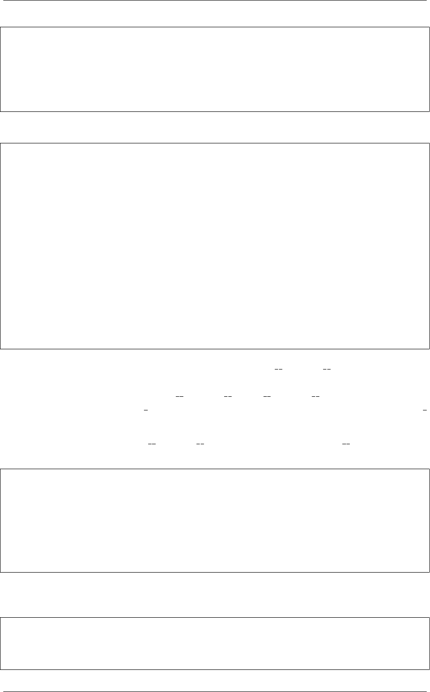

《Python Cookbook》第三版, Release 2.0.0
class B(A):
def spam(self, x):
print('B.spam')
super().spam(x)
def bar(self):
print('B.bar')
使用代理的话，就是下面这样：
class A:
def spam(self, x):
print('A.spam', x)
def foo(self):
print('A.foo')
class B:
def __init__(self):
self._a =A()
def spam(self, x):
print('B.spam', x)
self._a.spam(x)
def bar(self):
print('B.bar')
def __getattr__(self, name):
return getattr(self._a, name)
当实现代理模式时，还有些细节需要注意。首先， getattr () 实际是一个后备
方法，只有在属性不存在时才会调用。因此，如果代理类实例本身有这个属性的话，
那么不会触发这个方法的。另外， setattr () 和delattr () 需要额外的魔法来
区分代理实例和被代理实例 obj 的属性。一个通常的约定是只代理那些不以下划线
开头的属性 (代理类只暴露被代理类的公共属性)。
还有一点需要注意的是， getattr () 对于大部分以双下划线 ( ) 开始和结尾的
属性并不适用。比如，考虑如下的类：
class ListLike:
"""__getattr__ 对于双下划线开始和结尾的方法是不能用的，需要一个个去重定义"""
def __init__(self):
self._items =[]
def __getattr__(self, name):
return getattr(self._items, name)
如果是创建一个 ListLike 对象，会发现它支持普通的列表方法，如 append() 和
insert()，但是却不支持 len()、元素查找等。例如：
>>> a=ListLike()
>>> a.append(2)
>>> a.insert(0,1)
>>> a.sort()
10.15. 8.15 属性的代理访问 273